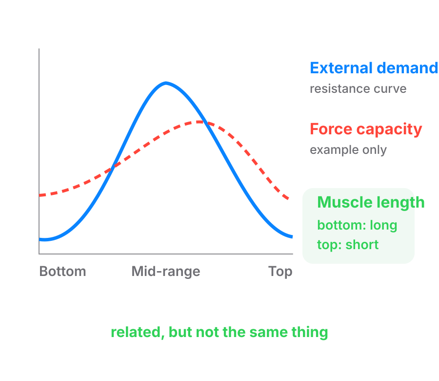

Three separate things hide inside "where is it hard". The lifter's own strength curve, the exercise's resistance curve, and muscle length. Naming them separately ends most arguments.
A resistance curve describes how the external demand of an exercise changes across the range of motion. It tells you where the exercise is easiest and hardest, from the load's side of the story. The load itself does not change. What changes is the lever: the perpendicular distance between the joint and the line the load pulls along, shifting through the rep. The resistance curve belongs to the exercise and the equipment, not to the person.
A strength curve describes how much torque a lifter can produce across the range of motion. It is shaped by muscle length, joint angle, internal moment arms, coordination, and the other muscles helping with the movement. So the resistance curve tells you how an exercise's demands change. The strength curve tells you how a lifter's ability to meet those demands changes. The two may line up well, or they may not.

Both curves ride on a lever, but not the same one. The load's own lever is the external moment arm (external moment arm): the perpendicular distance between the joint and the line the load pulls along. It belongs to the resistance curve, the equipment's side of the story.
The muscle or tendon's lever is the internal moment arm (internal moment arm): the perpendicular distance between the joint and the muscle's line of pull. It belongs to the strength curve, the lifter's side. The two can point the same way, or a different way entirely. That mismatch is most of why the strength curve and the resistance curve do not have to agree.
# The lifter's strength curve (strength curve)
sub: Personal to the lifter. How much torque they can produce at each point in the range
What it is: The most turning force a person can make at each joint angle. Their internal moment arms and muscle length together shape it. It is different for every joint and every individual.
# The resistance curve (resistance curve)
sub: The exercise's. How much torque the load puts on the joint at each point
What it is: What the weight demands at each joint angle. Gravity on a dumbbell, the angle of a cable, or the shape of a machine's cam.
Example: A dumbbell curl is hardest with the forearm level, because that is where the dumbbell's external moment arm is longest.
# Muscle length
sub: How long the muscle is at that joint angle
What it is: One of the two ingredients of the strength curve. It says nothing on its own about where the load bites.
Example: The biceps is longest with the arm straight, where the dumbbell curl is easy.
Muscle length is not a third kind of "where it is hard". It feeds the strength curve. It says nothing by itself about where the load bites. A stretched muscle is not automatically the point of highest external demand. The hardest point of an exercise is not automatically where the target muscle is longest.
Why it matters. One word cannot carry all three jobs. Where they come apart is on free weights, and that is where the arguments start. So every exercise page carries two lines: where the load peaks, and where the muscle is longest. A page gives only three reasons for where tension peaks: the moment arm, the muscle length, or the position of the machine's cam. The first two build the strength curve. The cam is the resistance curve.
A worked case. The Romanian deadlift page says tension peaks at the bottom, and adds that load and length coincide there. That sentence has two variables in it. The coach who wrote it is reporting that they happen to agree on this lift.
What it means for coaching. When analysing an exercise, ask three questions separately:
Keeping these apart stops a huge amount of confusion.
A single word doing all three jobs. If someone says a movement is "lengthened", ask which they mean. The muscle is long, the load is heaviest there, or the lifter is weakest there.
strength curve: How much torque a joint can produce at each point in its range. It is personal to the lifter, built from their internal moment arms and muscle length.
resistance curve: How much torque the load places on the joint at each point in the range. It belongs to the exercise: a cam, a cable angle, or gravity on a free weight.
external moment arm: The perpendicular distance between the joint and the line the load pulls along. It belongs to the resistance curve, not to the lifter.
internal moment arm: The perpendicular distance between the joint and the muscle or tendon's own line of pull. It belongs to the strength curve, not to the load.